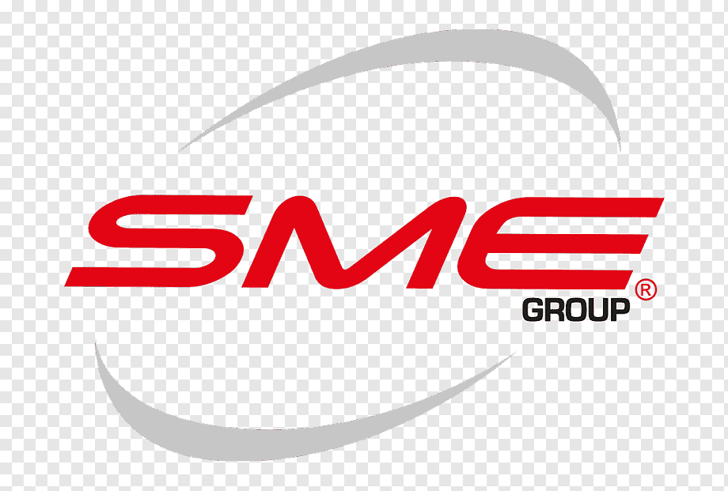
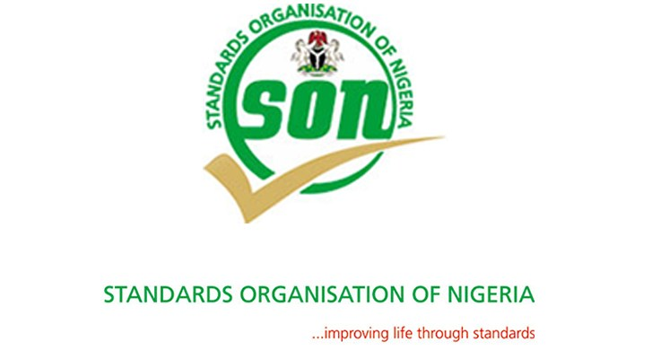
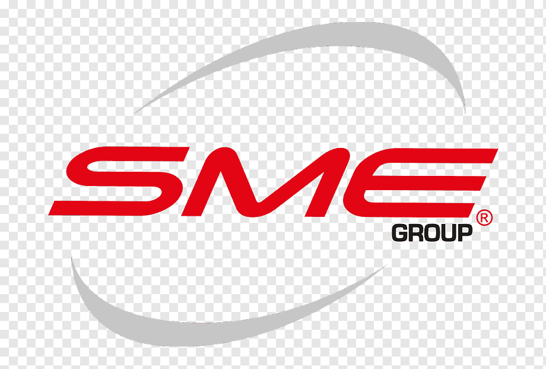
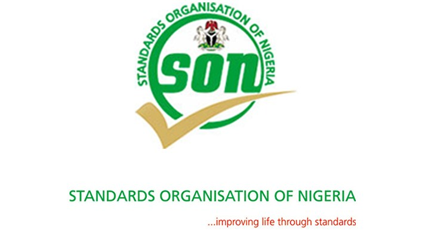
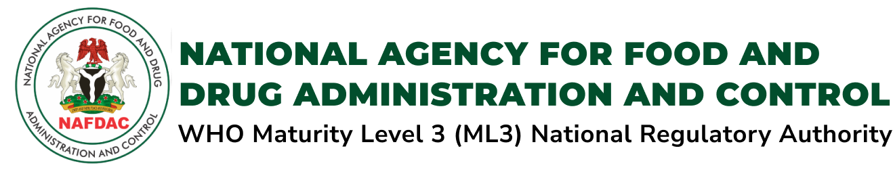
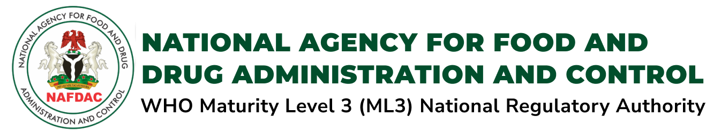

D.K.OLUKOYA CENTRAL RESEARCH & REFERENCE LABORATORY
The D. K. Olukoya Central Research & Reference Laboratory (DKO-CRRL) stands as a beacon of innovation
driving groundbreaking research across diverse fields. With our state-of-the-art technology and
cutting-edge infrastructure, we support the university vision to reposition the institution at the fore
front of scientific exploration, empowering researchers to
challenge conventional limits and unlock new
realms of knowledge. This remarkable facility not only supports individual and departmental research but
serves as the spark for multidisciplinary collaboration, promoting an atmosphere where bold ideas take
shape and transformative discoveries thrive. Its influence extends far beyond UNILAG, reshaping
industries, guiding policy development, and advancing societal well-being.
At the core of the DKO-CRRL’s mission lies the spirit of collaboration through access to facilities from
several of UNILAG’s Research Centre’s. Together our shared laboratory facilities provide an unparalleled
platform to foster partnerships across disciplines, institutions, and international borders, thereby
facilitating the collective pursuit of solutions to some of the world’s most pressing challenges. Our
advanced resources offer fast-track research breakthroughs, strengthens competitive grant proposals, and
fuel high-impact publications, all while reinforcing UNILAGs global research impact.
The DKO-CRRL plays a pivotal role in shaping the future of research by attracting and nurturing the next
generation of scientists. Our laboratory services include bench space to ambitious postgraduate students
who are eager to engage in advanced study and hands-on experience towards a timely completion of their
research projects. We support the industry with our brand commitment to quality and excellence in
Analytical, Microbiological, Materials, Molecular and Air quality assessments thereby solidifying the
DKO-CRRLs reputation in creating synergies that maximize intellectual output and practical application.
Our Vision
To be a global world-platform for the resolusion of multidimensionaal and complex research and
testing queries for the industry.
Our Mission
To provide independent, seamless, reliable, prompt and testing Laboratory services through
strategic partnerships and alliances for the benefit of mankind, economic development and
national prosperity through competitive knowledge generation using the power of testing.
Our Objectives
To engage the community and general public about the implications of genomic discoveries and benefits of
personalized healthcare services in improving health and informed health-decision-making
×
Objectives
1: Institute a quality managmet system-driven Laboratory platform for research and services.
2: Provide acadamic-led multi-disiplinary laboratory services for faculty, students and
industry
reseaarch, development and inquiries.
3: Conduct multidisiplinary primary, independent and referral laboratory testing and
elucidation of
complex investigational issues in the environment, biological, chemical, and material substances
and
products.
4: Develop standards for biological, chemical and material research and testing.
5: Conduct training for diverse laboratory procedures, standards and measurments for global
best
practices and impact.
6: Undertake strategic public-private partnerships for local content laboratory hosting and
investigations through national and international collaborations.
7: Provide a learning and skill development platform for our faculty and students to be
relavant in
the industry.
Applications are invited for Masters and Doctoral candidates across Africa who are interested in further
studies in Genomics of NCDs at the Center for Genomics of NCDs and Personalized Healthcare.
Please send a copy of your CV at cgnph@unilag.edu.ng for further information.

 



 
